Japan / Hokkaido / Higashikagura
Higashikagura
Higashikagura · Hokkaido
Higashikagura
Highlighted on the Hokkaido map.
Stay
COTTAGE HAPO
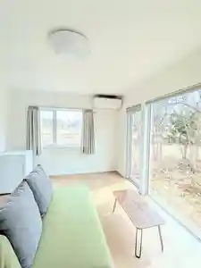
Cottage Hapo
森のゆホテル花神楽
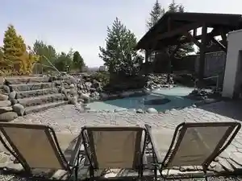
Mori Noyu Hoteru Kashin Raku
Dining
山源山下食品
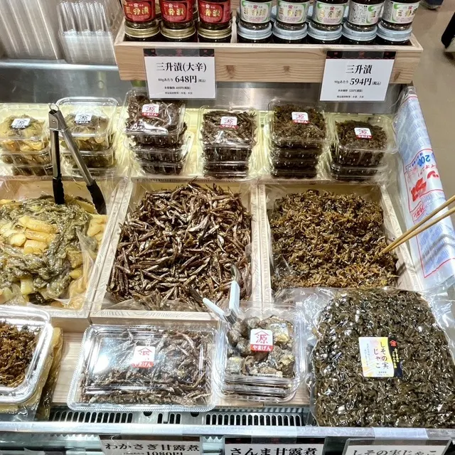
Yama Gen Yamashita Shokuhin
hanaguruma
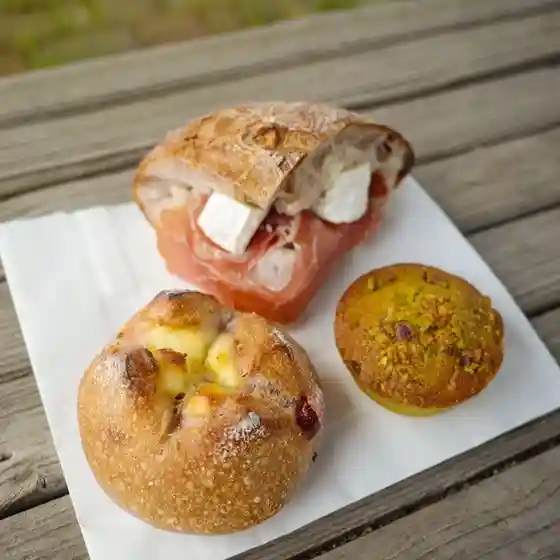
Hanaguruma
茶楽
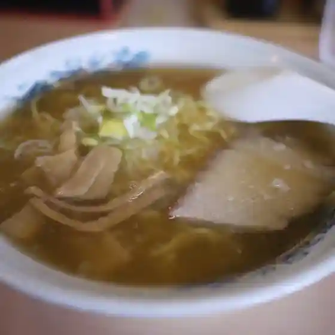
Cha Raku
ミルクスタンド エスペリオ
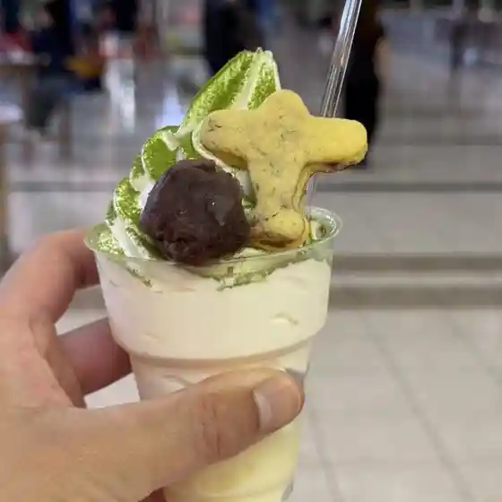
Mirukusutando Esuperio
梅屋 アルティモール東神楽店
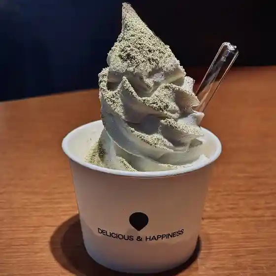
Umeya Aruteimooru Higashikagura Mise
蕎麦 雪屋 アルティモール東神楽店
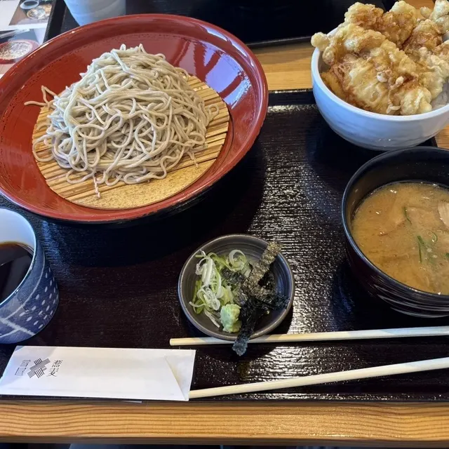
Soba Yuki Ya Aruteimooru Higashikagura Mise
森のゆ ホテル花神楽
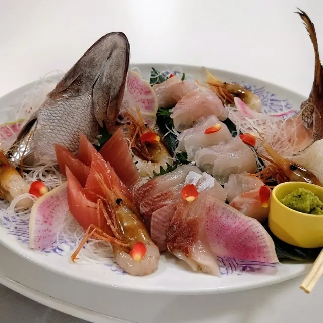
Mori Noyu Hoteru Kashin Raku
エアポート・リラ
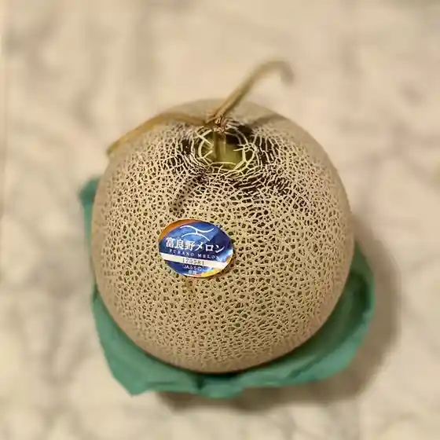
Eapooto Rira
あさひかわ物産
Asahikawa Bussan
JAL PLAZA 旭川空港 出発ロビー店
Jal Plaza Asahikawa Kuukou Shuppatsu Robii Mise
喰い呑み座 新山
Kui Nomi Za Shinzan
ランチ・喫茶&居酒屋 和心
Ranchi Kissa & Izakaya Wa Kokoro
granpa
Granpa
BESTOM 東神楽店
Bestom Higashikagura Mise
JAL PLAZA 旭川空港 ゲートショップ
Jal Plaza Asahikawa Kuukou Geetoshoppu
野風庵
Nokaze Iori
ラウンジ 大雪
Raunji Ooyuki
和菓子のあずき畑
Wagashi Noazuki Hatake
海鮮丼と幌加内黒蕎麦 祐一郎商店 旭川空港店
Kaisen Donburi To Horokanai Kuro Soba Yuuichirou Shouten Asahikawa Kuukou Mise
クローバー
Kuroobaa
ARROWS COFFEE&BAGEL
Arrows Coffee&Bagel
nacon
Nacon
cafeだいだいの丘
Cafe Daidaino Oka
キッチン・マロン
Kitchin Maron
Sights
Asahikawa Airport
Asahikawa Airport
Higashikagura Forest Park Campground
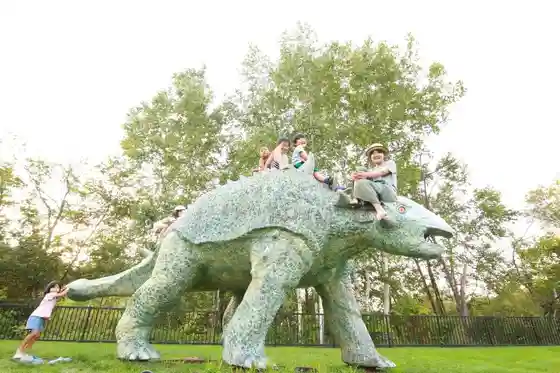
Higashikagura Forest Park Campground
Akuteibitei Center Asahikawa Airport
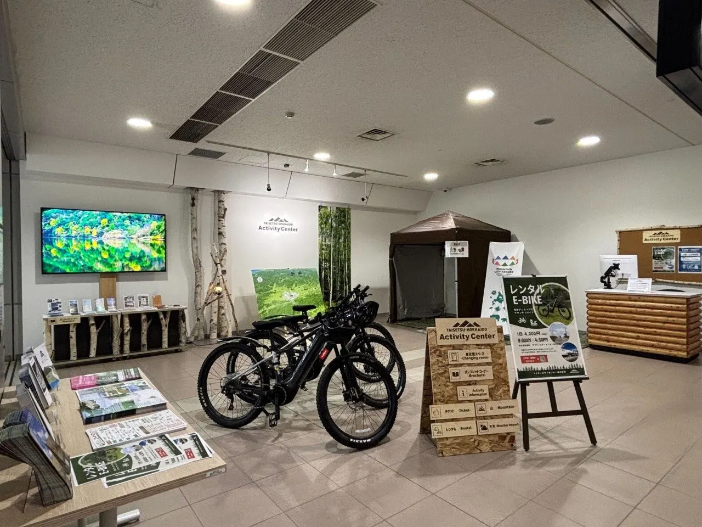
Akuteibitei Center Asahikawa Airport
Higashikagura Shrine
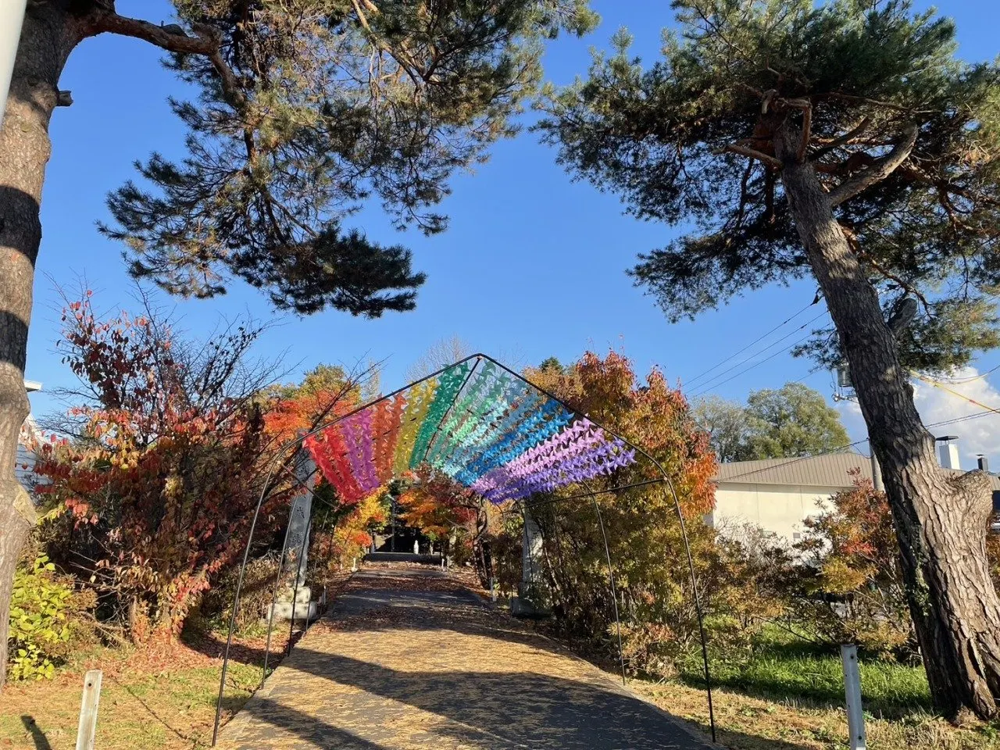
Higashikagura Shrine
Upashi Forest
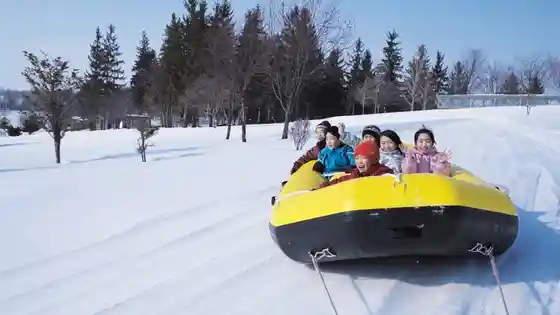
Upashi Forest
Daisetsuzan Kantorii Club
Daisetsuzan Kantorii Club